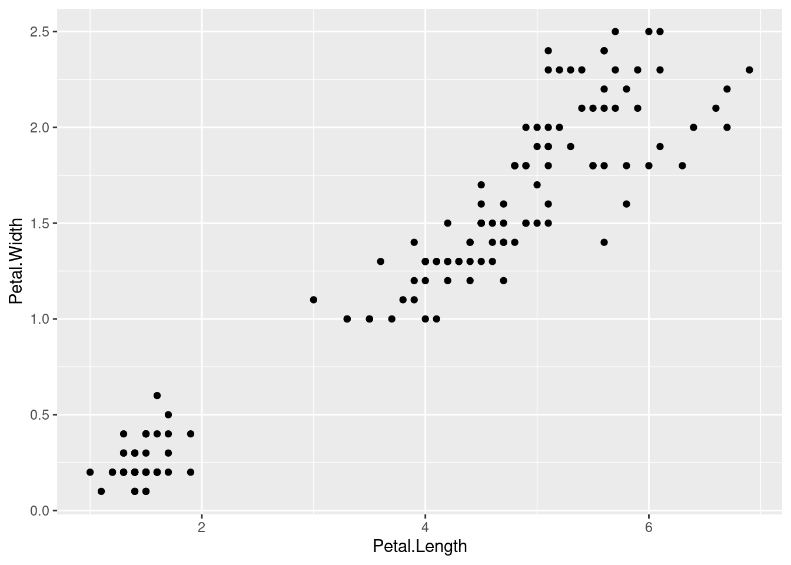
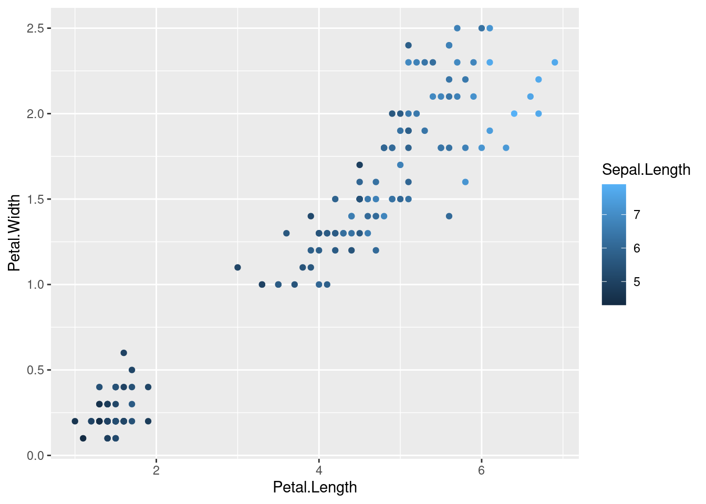
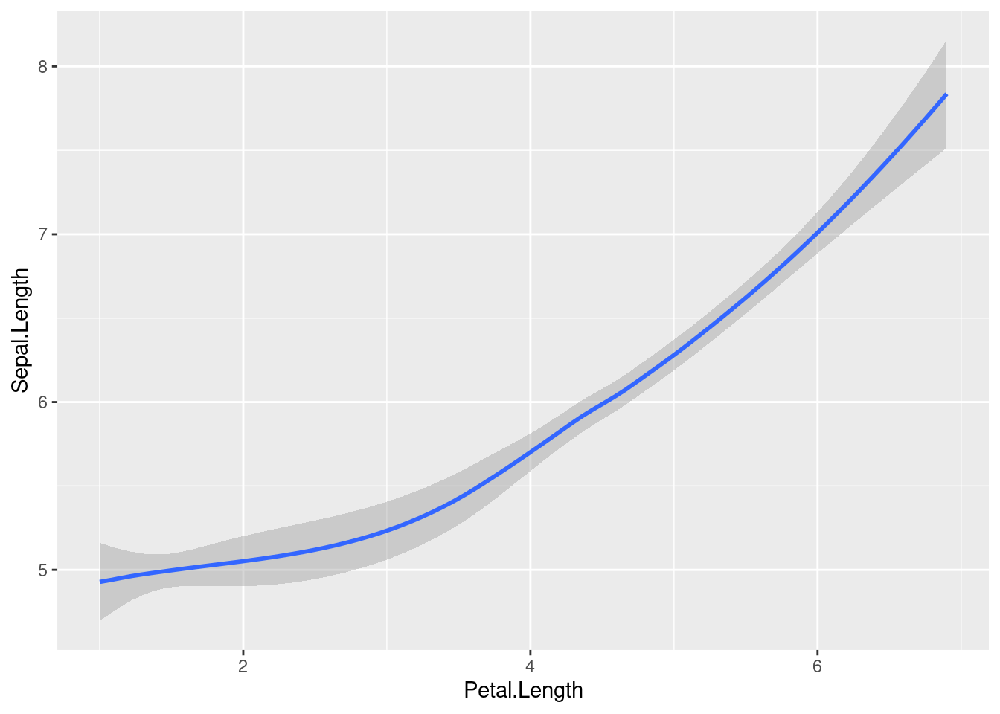
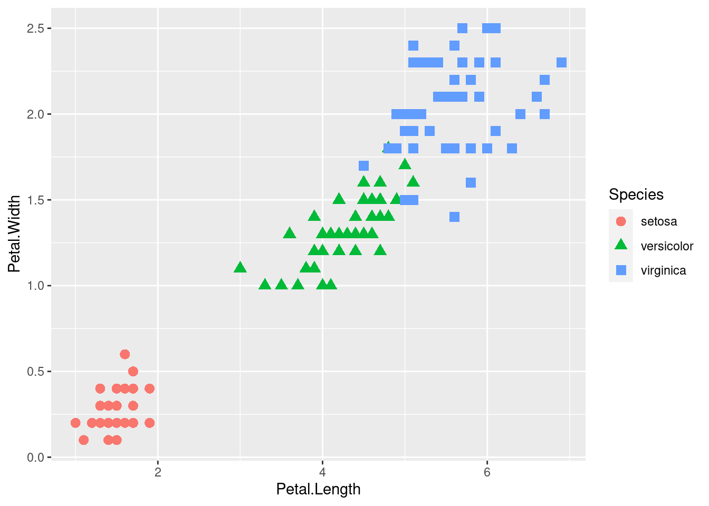
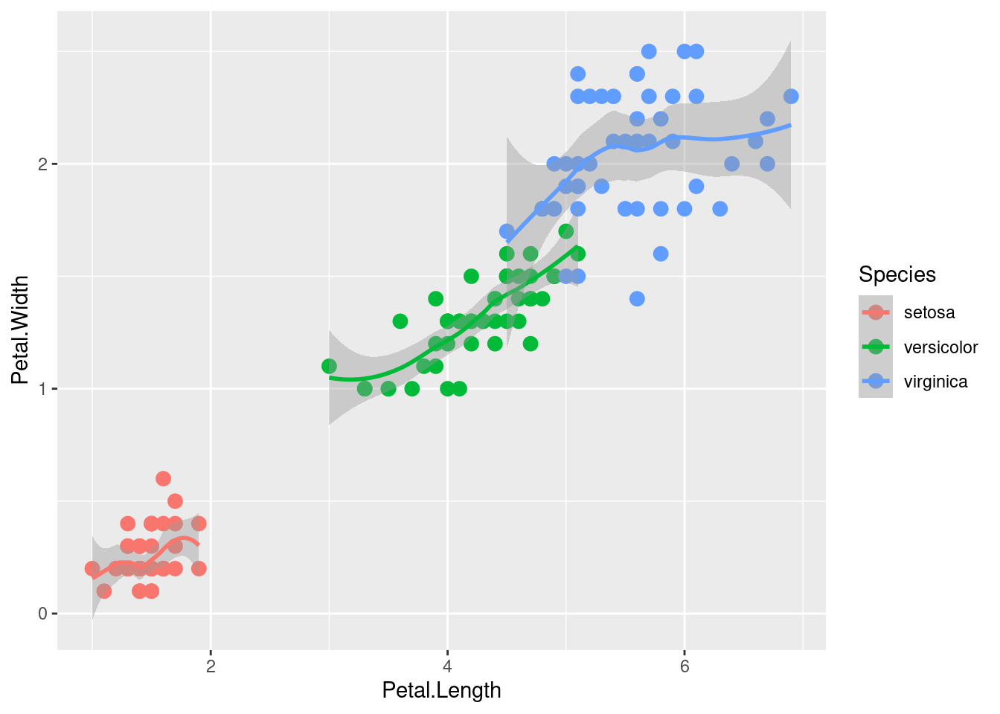
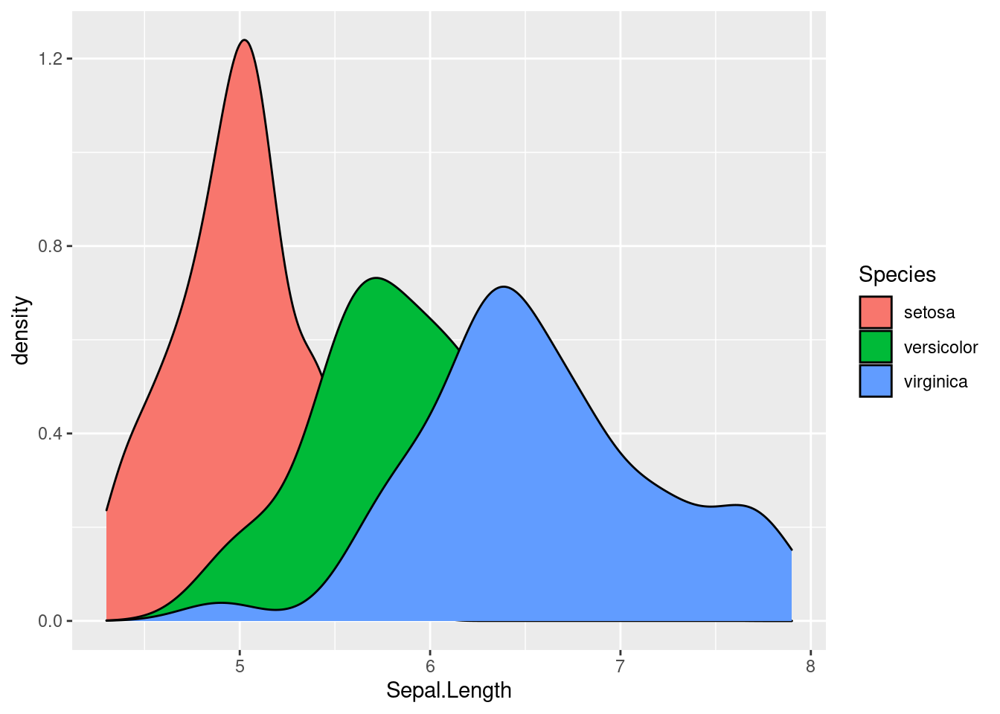
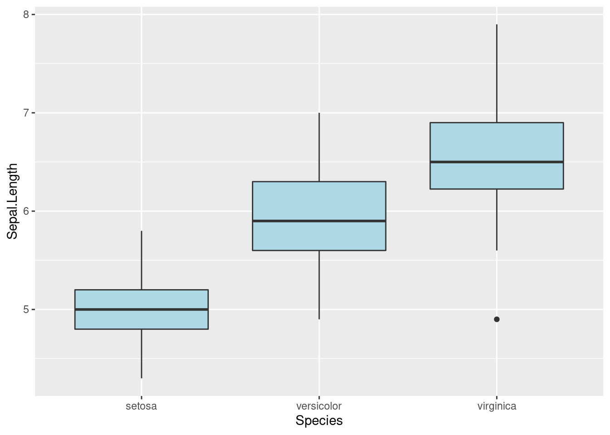

81 Tutorial for ggvis and its Comparison with ggplot2
Anbang Wang and Keyi Guo
81.1 Introduction
For R users, ggplot2 is a name that can hardly be ignored. As a data visualization package, ggplot2 can actually take care of all the details as long as you provide the data and tell it how to map variables to aesthetics. But there are certain features in ggvis that can be both practical and easy to use. In addition, ggvis has its special interactive plots that enables you to create complex, aesthetically pleasing charts with interactive features. Therefore, while it can generate similar graphs as ggplot2 did for a dataset, it can also generate interactive graphs. In this tutorial, we will include the ways of generating static plots by ggvis, its comparison to ggplot2, and also a video tutorial for the interactive part.
81.2 Install and load “ggvis” and “ggplot2” packages
Shiny is an R package that makes it easy to build interactive web apps straight from R.
#remotes::install_github("rstudio/shiny")
library(shiny)
library(ggvis)
library(tidyverse)
library(ggplot2)
library(dplyr)81.5 Histogram
ggvis
#View(iris)
iris%>%
ggvis(~Sepal.Length)%>%
layer_histograms()ggplot
ggplot(iris, aes(x=Sepal.Length)) +
geom_histogram()- The default histograms for ggvis and ggplot are very similar but with different bin_width
- The default method used for drawing ggplot histogram does not contain strokes
81.6 Scatter Plots
ggvis
iris %>%
ggvis(~Petal.Length, ~Petal.Width) %>%
layer_points()ggplot
ggplot(iris, aes(x=Petal.Length, y=Petal.Width)) +
geom_point()
- Differences in default methods of drawing scatter plot:
- Point size
- Theme
- X-y scales labels
81.7 Scatter Plots (Customization)
By changing each argument’s value, we can actually create our own plot style.
81.7.1 fill (change the color of the dots)
ggvis
iris %>%
ggvis(~Petal.Length, ~Petal.Width, fill=~Sepal.Length) %>%
layer_points()ggplot
ggplot(iris, aes(x=Petal.Length, y=Petal.Width, colour = Sepal.Length))+
geom_point()
81.7.2 size (change dots size)
ggvis
iris %>%
ggvis(~Petal.Length, ~Petal.Width, size=~Sepal.Length) %>%
layer_points()ggplot
ggplot(iris, aes(x=Petal.Length, y=Petal.Width, size = Sepal.Length))+
geom_point()81.7.3 Opacity ( change transparency of the dots)
ggvis
iris %>%
ggvis(~Petal.Length, ~Petal.Width, size:=300, opacity = ~Sepal.Length) %>%
layer_points()81.8 Line Plot
ggvis
iris %>%
ggvis(~Petal.Length, ~Sepal.Length) %>%
layer_smooths()ggplot
ggplot(iris, aes(x=Petal.Length, y=Sepal.Length))+
geom_smooth()
- Differences in default methods of drawing line plots:
- Ggvis and ggplot use different line color (black vs blue)
- Different theme
- Ggplot draws smooth line with the confidence interval, whearas ggvis draws only the smooth line
81.9 Line Plot (Customization)
ggvis
iris %>%
ggvis(~Petal.Length, ~Sepal.Length) %>%
layer_smooths(stroke:='red', span = 0.3, se=TRUE, strokeWidth:=5)gglot
ggplot(iris, aes(x=Petal.Length, y=Sepal.Length))+
geom_smooth(se=FALSE, colour = "red", size=3, span=0.3, position = "identity")- There are few arguments we can change to make the line plot looks pretty:
- Stroke (color of the line)
- SE (with/without confidence interval)
- Size/Strokewidth (line width)
- Span (Controls the amount of smoothing for the default loess smoother)
81.10 Scatter plots
ggvis
iris %>%
ggvis(~Petal.Length, ~Petal.Width, shape = ~factor(Species)) %>%
layer_points(fill= ~Species)ggplot
ggplot(iris, aes(x=Petal.Length, y=Petal.Width, color=Species, shape=Species)) +
geom_point(size=3)
- Use scatter plot to draw the relationship between Petal_Length and Petal_Width
- Dots are clustered by the species of iris
- Assign a unique color and shape for the dots clustered in different group
81.11 Scatter plots with fit line
ggvis
iris %>%
ggvis(~Petal.Length, ~Petal.Width) %>%
layer_points(fill= ~Species)%>%
layer_smooths(span = 0.5, stroke:= 'black')ggplot
ggplot(iris, aes(x=Petal.Length, y=Petal.Width, color=Species)) +
geom_point(size=3)+
geom_smooth()
- By default, ggvis draws the fit line for the entire plot, whereas ggplot draws fit line for each of the clustered dot group.
81.12 Density Plots
ggvis
ggplot
ggplot(data=iris, aes(x=Sepal.Length, group=Species, fill=Species)) +
geom_density()
- ggvis draws density plot with a certain amount of transparency by default, which makes it easier to distinguish the overlapped graphs
- ggplot, on the other hand, draws the plot with no degree of transparency. It is hard to understand because the graphs cover one another
81.13 Boxplot
ggvis
iris %>%
ggvis(~Species, ~Sepal.Length) %>%
layer_boxplots(fill := "lightblue")ggplot
ggplot(iris, aes(x=Species, y=Sepal.Length)) +
geom_boxplot(fill = "lightblue")
- The default method of drawing box plot are the same for ggvis and ggplot except they use different themes
81.14 Plot for Time Series Data
ggvis and ggplot2 actually have very similar methods to deal with time series data.
ggvis’s layer_paths will draw a line in whatever order appears in the data. Here, we choose the economics dataset and visualize how unemployment rate changes over date.
economics %>%
ggvis(~date, ~unemploy) %>%
layer_paths()ggplot2’s geom_path() connects the observations in the order in which they appear in the data. It can generate a very similar output.

We can also plot how two variables are related over time. Here, we are plotting the unemployment and personal savings rate over time.
economics %>%
ggvis(~unemploy/pop, ~psavert) %>%
layer_paths()Better than ggvis, ggplot supports coloring in terms of time. It shows how unemployment and personal savings change over time more clearly.
m <- ggplot(economics, aes(unemploy/pop, psavert))
m + geom_path(aes(colour = as.numeric(date)))81.15 Heatmap
Both ggvis and ggplot2 can create heatmap for suitable dataset. Here, we use the UCBAdmissions dataset as an example.
81.15.0.0.1 ggvis
In ggvis, we can create a heatmap by using layer_rects().
admit<- as.data.frame(xtabs(Freq ~ Dept + Admit, UCBAdmissions))
admit %>%
ggvis(~Dept, ~Admit, fill = ~Freq) %>%
layer_rects(width = band(), height = band()) %>%
scale_nominal("x", padding = 0, points = FALSE) %>%
scale_nominal("y", padding = 0, points = FALSE)
* We must set two of x, x2, and width, and two of y, y2 and height. For ordinal scale, it is better to set width and height to prop_band() to occupy the complete band corresponding to that categorical value.
81.16 Interactive Graphs
What’s so special about ggvis is that it has some interactive controls that present graphical information more straightforward and vivid. It allows us to see the differences through changing the argument values that we passed in. In order to better show the visualization features of ggvis, we will include a brief video tutorial here.
81.16.1 link here : https://www.youtube.com/watch?v=jTcjgaDyx4A
ggvis designs a series of functions to produce interactive controls. We will start with some basic ones, which produces very similar results to statis plots. All we do is replacing constant values with functions.
81.16.1.1 input_slider
input_slider provide an interactive slider. Here, we use it to control size and opacity for the scatter plot.
iris %>%
ggvis(~Sepal.Length, ~Petal.Length,
size := input_slider(10, 100),
opacity := input_slider(0, 1)
) %>%
layer_points()
We can also adjust the span value for the fit line.
iris %>%
ggvis(~Sepal.Length, ~Petal.Length) %>%
layer_smooths(span = input_slider(0.5, 1, value = 1)) %>%
layer_points(size := input_slider(20, 200, value = 100),
opacity := input_slider(0, 1))81.16.1.2 input_numeric
input_numeric is another way we can use to adjust the size. Unlike input_slider, it only allows numbers and comes with a spin box control.
size_num <- input_numeric(label = "Point size", value = 25)
iris %>%
ggvis(~Sepal.Length, ~Petal.Length, size := size_num) %>%
layer_points()81.16.1.3 input_text
input_text allows any kind of input values. Therefore, it can also be used to adjust the colors without having to specify a series of options.
fill_text <- input_text(label = "Point color", value = "lightblue")
iris %>%
ggvis(~Sepal.Length, fill := fill_text) %>%
layer_bars()81.16.1.4 input_select
We can use input_select to provide a series of options for values like shape and color. We have to provide the options by using the “choices” argument.
iris %>%
ggvis(~Sepal.Length, ~Petal.Length, fillOpacity := 0.5,
shape := input_select(label = "Choose shape:",
choices = c("circle", "square", "cross", "diamond", "triangle-up", "triangle-down")),
fill := input_select(label = "Choose color:",
choices = c("black", "red", "blue", "green"))) %>%
layer_points()81.16.1.5 input_checkbox
input_checkbox controls different values by using the “map” function. It creates an interactive checkbox. The map function will become valid if the checkbox is checked.
# Used with a map function, to convert the boolean to another type of value
model_type <- input_checkbox(label = "Use flexible curve",
map = function(val) if(val) "loess" else "lm")
iris %>%
ggvis(~Sepal.Length, ~Petal.Length) %>%
layer_model_predictions(model = model_type)81.16.2 Combine different methods
Here we can use both input_slider and input_select for different types of interactive effects. For this density graph, we use input_slider to adjust bandwidth, and input_select to provide a series of kernel options.
iris %>%
ggvis(x = ~Petal.Width) %>%
layer_densities(
adjust = input_slider(.1, 2, value = 1, step = .1, label = "Bandwidth adjustment"),
kernel = input_select(
c("Gaussian" = "gaussian",
"Epanechnikov" = "epanechnikov",
"Rectangular" = "rectangular",
"Triangular" = "triangular",
"Biweight" = "biweight",
"Cosine" = "cosine",
"Optcosine" = "optcosine"),
label = "Kernel")
)
Similarly, we use both input_select and input_slider in this box plot for both color and stroke width control.
iris %>%
ggvis(~Species, ~Sepal.Length) %>%
layer_boxplots(fill := input_select(label = "Choose color:",
choices = c("green", "red", "blue", "grey")),
strokeWidth := input_slider(0.1,5))81.16.3 Multiple Outputs
We can also use one slider for multiple outputs control. Once the slider is pre-defined, we can use it in different functions to adjust values at the same time.
slider <- input_slider(10, 1000)
iris %>% ggvis(~Sepal.Length, ~Petal.Length) %>%
layer_points(fill := "red", stroke:= "black", size := slider) %>%
layer_points(stroke := "black", fill := NA, size := slider)81.17 References
Package ’ggvis: ’https://cran.r-project.org/web/packages/ggvis/ggvis.pdf
A Short Introduction to ggvis: ‘https://towardsdatascience.com/a-short-introduction-to-ggvis-52a4c104df71’
Quick ggvis examples: ‘https://ggvis.rstudio.com/0.1/quick-examples.html’
Data Visualization In R With The ggvis Package: ‘https://dk81.github.io/dkmathstats_site/rvisual-ggvis-guide.html’